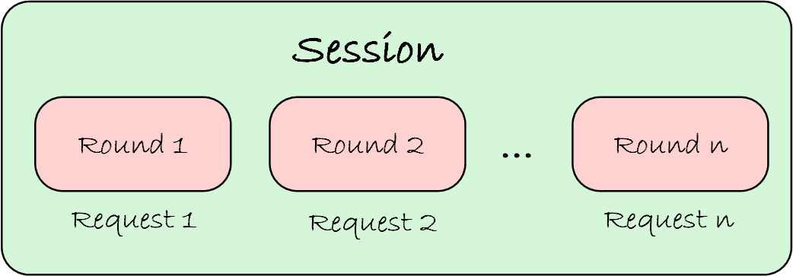

Session
A Session is a conversation instance between the user and UFO. It is a continuous interaction that starts when the user initiates a request and ends when the request is completed. UFO supports multiple requests within the same session. Each request is processed sequentially, by a Round of interaction, until the user's request is fulfilled. We show the relationship between Session and Round in the following figure:

Session Lifecycle
The lifecycle of a Session is as follows:
1. Session Initialization
A Session is initialized when the user starts a conversation with UFO. The Session object is created, and the first Round of interaction is initiated. At this stage, the user's request is processed by the HostAgent to determine the appropriate application to fulfill the request. The Context object is created to store the state of the conversation shared across all Rounds within the Session.
2. Session Processing
Once the Session is initialized, the Round of interaction begins, which completes a single user request by orchestrating the HostAgent and AppAgent.
3. Next Round
After the completion of the first Round, the Session requests the next request from the user to start the next Round of interaction. This process continues until there are no more requests from the user.
The core logic of a Session is shown below:
def run(self) -> None:
"""
Run the session.
"""
while not self.is_finished():
round = self.create_new_round()
if round is None:
break
round.run()
if self.application_window is not None:
self.capture_last_snapshot()
if self._should_evaluate and not self.is_error():
self.evaluation()
self.print_cost()
4. Session Termination
If the user has no more requests or decides to end the conversation, the Session is terminated, and the conversation ends. The EvaluationAgent evaluates the completeness of the Session if it is configured to do so.
Reference
Bases: ABC
A basic session in UFO. A session consists of multiple rounds of interactions and conversations.
Initialize a session.
| Parameters: |
|
|---|
Source code in module/basic.py
314 315 316 317 318 319 320 321 322 323 324 325 326 327 328 329 330 331 332 333 334 335 336 337 338 339 340 341 342 343 | |
application_window: UIAWrapper
property
writable
Get the application of the session. return: The application of the session.
context: Context
property
Get the context of the session. return: The context of the session.
cost: float
property
writable
Get the cost of the session. return: The cost of the session.
current_round: BaseRound
property
Get the current round of the session. return: The current round of the session.
evaluation_logger: logging.Logger
property
Get the logger for evaluation. return: The logger for evaluation.
id: int
property
Get the id of the session. return: The id of the session.
rounds: Dict[int, BaseRound]
property
Get the rounds of the session. return: The rounds of the session.
session_type: str
property
Get the class name of the session. return: The class name of the session.
step: int
property
Get the step of the session. return: The step of the session.
total_rounds: int
property
Get the total number of rounds in the session. return: The total number of rounds in the session.
add_round(id, round)
Add a round to the session.
| Parameters: |
|
|---|
Source code in module/basic.py
387 388 389 390 391 392 393 | |
capture_last_snapshot()
Capture the last snapshot of the application, including the screenshot and the XML file if configured.
Source code in module/basic.py
622 623 624 625 626 627 628 629 630 631 632 633 634 635 636 637 638 639 640 641 642 643 | |
create_following_round()
Create a following round. return: The following round.
Source code in module/basic.py
380 381 382 383 384 385 | |
create_new_round()
abstractmethod
Create a new round.
Source code in module/basic.py
365 366 367 368 369 370 | |
evaluation()
Evaluate the session.
Source code in module/basic.py
587 588 589 590 591 592 593 594 595 596 597 598 599 600 601 602 603 604 605 606 607 608 609 610 611 612 | |
experience_saver()
Save the current trajectory as agent experience.
Source code in module/basic.py
509 510 511 512 513 514 515 516 517 518 519 520 521 522 523 524 525 526 527 528 529 530 531 532 533 534 535 536 | |
initialize_logger(log_path, log_filename)
staticmethod
Initialize logging. log_path: The path of the log file. log_filename: The name of the log file. return: The logger.
Source code in module/basic.py
645 646 647 648 649 650 651 652 653 654 655 656 657 658 659 660 661 662 663 664 665 666 667 | |
is_error()
Check if the session is in error state. return: True if the session is in error state, otherwise False.
Source code in module/basic.py
557 558 559 560 561 562 563 564 | |
is_finished()
Check if the session is ended. return: True if the session is ended, otherwise False.
Source code in module/basic.py
566 567 568 569 570 571 572 573 574 575 576 577 | |
next_request()
abstractmethod
Get the next request of the session. return: The request of the session.
Source code in module/basic.py
372 373 374 375 376 377 378 | |
print_cost()
Print the total cost of the session.
Source code in module/basic.py
538 539 540 541 542 543 544 545 546 547 548 549 550 551 552 553 554 555 | |
request_to_evaluate()
abstractmethod
Get the request to evaluate. return: The request(s) to evaluate.
Source code in module/basic.py
579 580 581 582 583 584 585 | |
run()
Run the session.
Source code in module/basic.py
345 346 347 348 349 350 351 352 353 354 355 356 357 358 359 360 361 362 363 | |